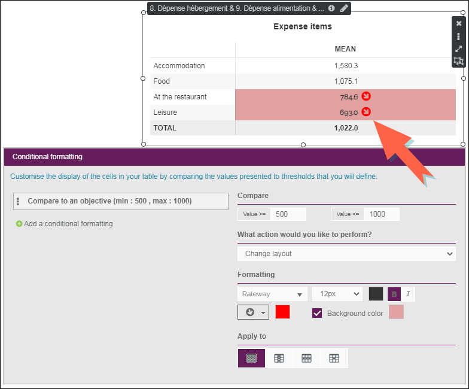
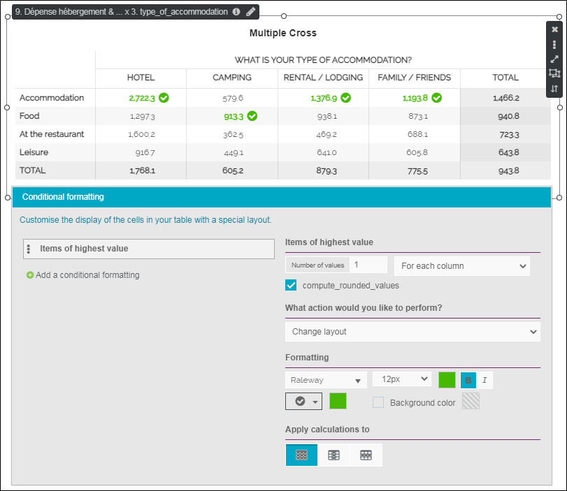
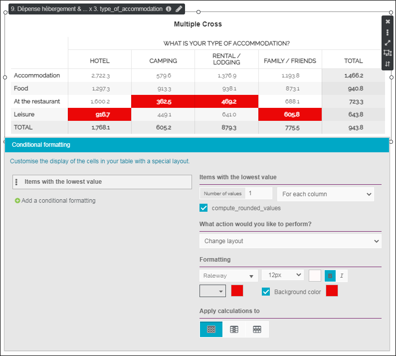
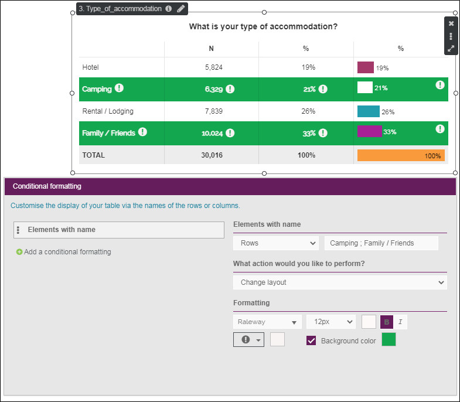
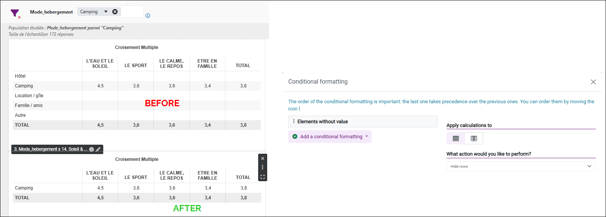
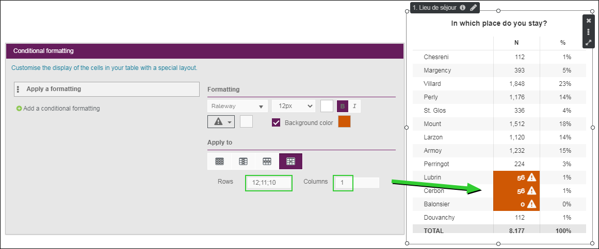

Conditional formatting
The Conditional formatting option allows you to customize the display of cells in your table by comparing the values presented with custom-defined thresholds.
To set up conditional formatting, proceed as follows:
-
Select your table.
-
From the Options tab click on the
 Conditional Formatting button.
Conditional Formatting button. -
Click on + Add a conditional formatting.
-
Choose the mode to use.
NOTE: You can modify the name of a conditional formatting.
Several types of formatting are available:
 Compare to an objective
Compare to an objective
This mode allows you to customize the display of the cells in your table by comparing the values presented to thresholds that you will define.
Three actions can be realized:
- Change layout;
- Hide rows/columns;
- Display rows/columns.
EXAMPLE: Table cells that have a value greater than or equal to 500 and less than or equal to 1000 will be colored red.

Items of highest value
This mode allows you to customize the display of the elements with the highest value (for the whole table, for each row or each column).
-
Select the number of values to customize (for example the 2 items with the highest value).
Three actions can be realized:
-
Change layout;
-
Hide rows/columns;
-
Display rows/columns.
EXAMPLE: We have colored in green the element with the highest value for each column of the table.

Items with the lowest value
This mode allows you to customize the display of the elements with the lowest value (for the whole table, for each row or each column).
-
Select the number of values to customize (for example the 2 items with the lowest value).
Three actions can be realized:
-
Change layout;
-
Hide rows/columns;
-
Display rows/columns.
EXAMPLE: We have colored in red the element with the lowest value for each column of the table.

Elements with name
This mode allows you to customize the display of your table via the names of the rows or columns.
Three actions can be performed:
- Change layout;
- Hide rows/columns;
- Display rows/columns.
EXAMPLE: In this table, we have decided to display the lines with the name: "Camping" and "Family / friends", the two names are separated by a ";".

Elements without value
This mode is used to hide empty rows/columns in a table.
EXAMPLE: In this table, we have decided to hide the empty rows.

Apply a formatting
This mode allows you to customize the display of the cells in your table with a particular layout.
EXAMPLE: In this table, we have decided to customize the display of cells that correspond to rows 10, 11, 12 and column 1.

-
(optional) Change the formatting (font, size, text color, background color, display an icon).
-
Choose where to apply the calculations (formatting): to the whole table, to a row, to a column or to a particular cell.
NOTE: In the case of a cell, the row and column number must be specified.